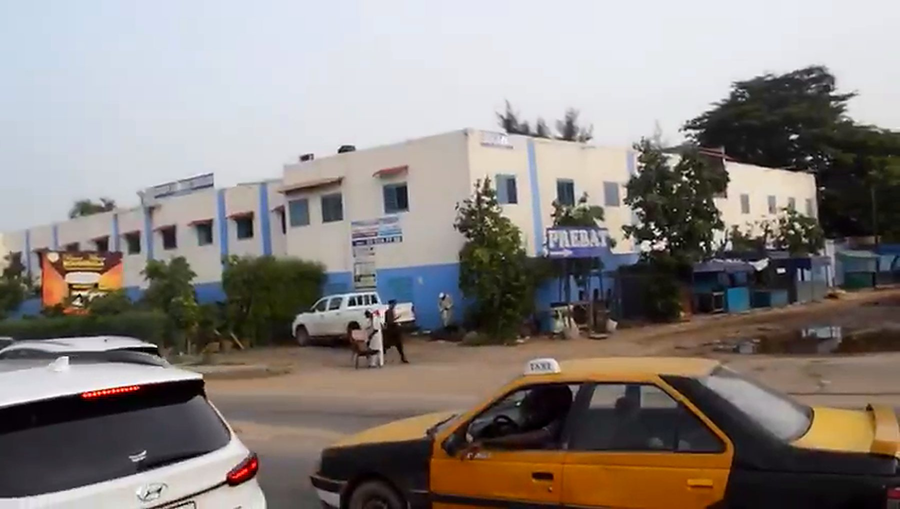
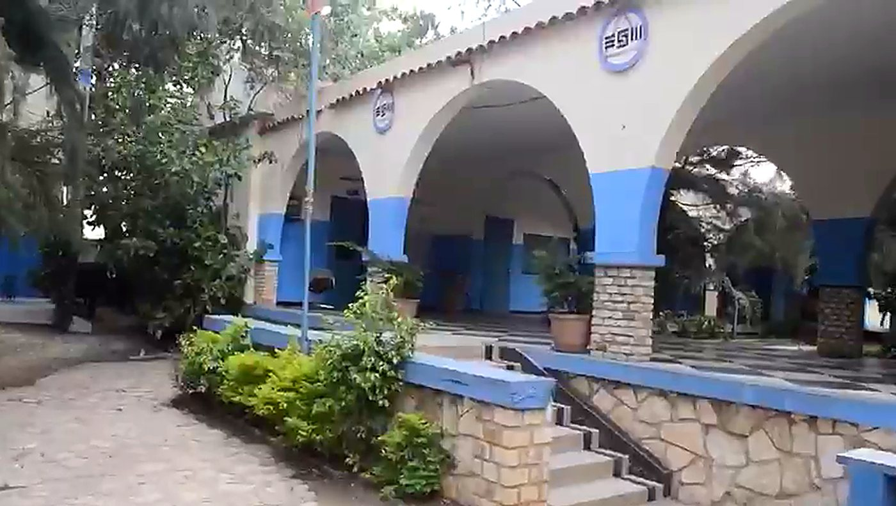
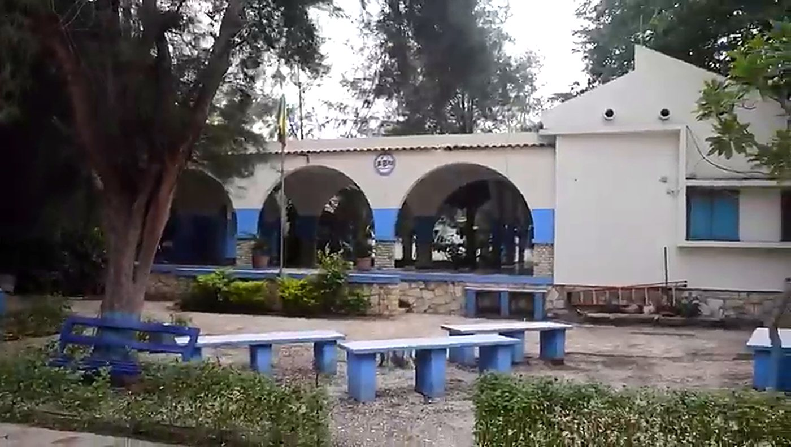

Renforcer l'offre de proximité
Contribuer à renforcer l'offre éducative dans une zone en pleine croissance, qui compte environ 450 000 habitants, majoritairement jeune.

Plus d'un quart de siècle d'expérience, un cycle complet de la 6e à la Terminale, et une ambition qui demeure intacte : préparer nos élèves à réussir leur avenir.
Notre histoire
Depuis plus d'un quart de siècle, le Groupe Scolaire Educazur évolue au cœur du département de Pikine, sur la Nationale 1, au Km 16. L'établissement s'est progressivement affirmé comme une référence dans le paysage éducatif local.
Cette longévité, Educazur la doit à sa capacité à s'adapter aux évolutions de l'école, mais aussi à une exigence constante de qualité, comme en témoignent les résultats obtenus au fil des années aux différents examens.
Aujourd'hui, Educazur propose un cycle complet, de la 6e à la Terminale, permettant aux élèves d'effectuer l'ensemble de leur parcours secondaire dans un même environnement éducatif.

Le projet

À l'origine de cette ambition, le GIE Vision Azur, qui pilote le projet, a consenti un investissement de près d'un demi-milliard de francs CFA afin de créer un cadre moderne, fonctionnel et propice à la quête de l'excellence.
Cet investissement traduit une conviction : la qualité de l'éducation ne repose pas uniquement sur les enseignements dispensés ; elle dépend également de l'environnement dans lequel l'élève apprend, grandit et construit son avenir.
Voir le cadre de vieNotre ambition
Parce que rapprocher l'école de la famille, c'est aussi rapprocher l'élève des conditions de sa réussite.
Contribuer à renforcer l'offre éducative dans une zone en pleine croissance, qui compte environ 450 000 habitants, majoritairement jeune.
Réduire les dépenses et les difficultés liées au transport et à la restauration, en rapprochant l'école du domicile.
Offrir une éducation de qualité dans un cadre sécurisé, accueillant et épanouissant, au plus près du lieu de résidence des élèves.
Une évolution continue
Educazur ne veut pas seulement montrer ce qui a été réalisé : l'établissement témoigne d'une évolution, celle d'une école qui, forte de son histoire, continue à se transformer, à investir et à préparer son avenir.
Différents aménagements ont été réalisés afin d'offrir de meilleures conditions d'apprentissage et de travail à nos élèves comme à nos enseignants.
Parce que l'école de demain est aussi une école ouverte au numérique, Educazur accorde une place importante aux outils technologiques et à l'innovation pédagogique.
Conçue comme un espace de lecture, de recherche et d'enrichissement intellectuel, pour développer le goût de la lecture et l'accès au savoir.
Parce que le bien-être de l'élève est au cœur de nos préoccupations, l'établissement dispose d'un espace adapté à leur prise en charge.
Au-delà des salles de classe, c'est tout l'environnement scolaire qui évolue : un cadre plus agréable, plus fonctionnel et plus accueillant.
« La qualité de l'éducation dépend aussi de l'environnement dans lequel l'élève apprend, grandit et construit son avenir. »

Rentrée 2026–2027
Les inscriptions sont ouvertes et le nombre de places est limité.